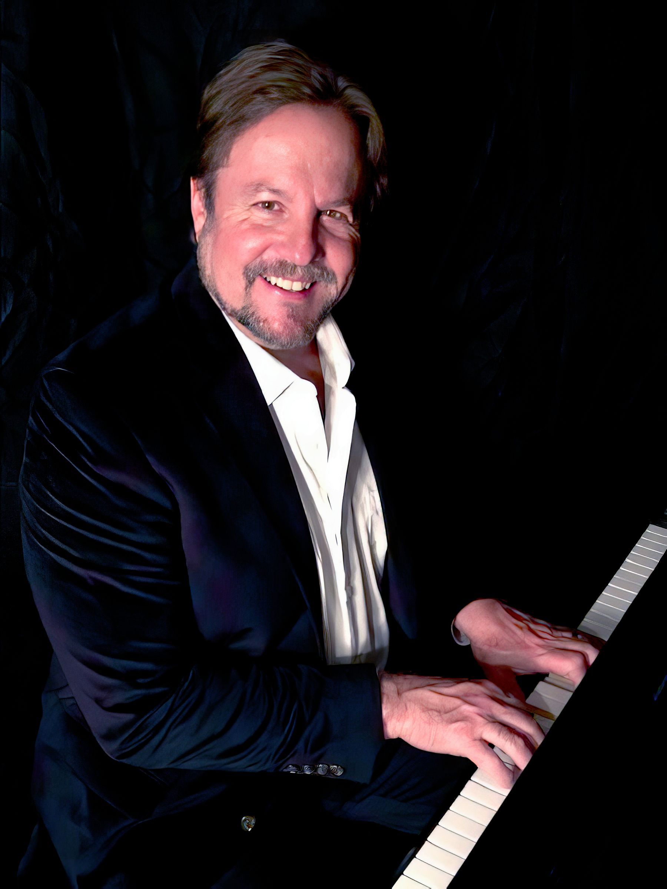
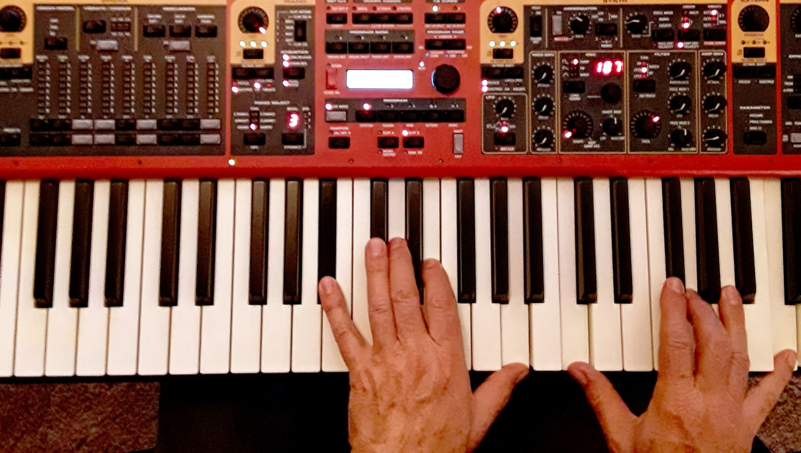
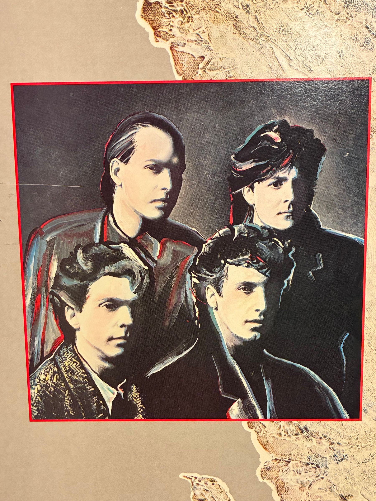

Press / EPK
Robert Parlee at a glance.
Singer, songwriter, pianist, and guitarist with Billboard chart history, MTV airplay, major-label releases, film credits, and a current solo album recorded in Nashville.
Highlights
- Lead vocal with Isle of Man under the studio pseudonym “Robere Parlez.”
- Isle of Man peaked at #110 on Billboard’s Hot 200.
- “Desperate Surrender” received MTV and MTV2 airplay.
- “Am I Forgiven” charted at #90 in 1986.
- Curb Records chapter with Lonesome Romeos.
- Film credits include Teen Wolf Too, Major League, and Wedding Bell Blues.
Short Bio
Copy-ready bio.
Robert Owen Parlee is a Northern California singer, songwriter, pianist, and guitarist whose career spans Pasadena rock bands, major-label releases, Billboard chart history, MTV airplay, soundtrack credits, and current Americana-rooted solo work. His album Stealing Every Moment brings songs written across multiple decades to life, recorded in Nashville with producer Travis Allen.
Press Photos
Downloadable images.

{kind=link}

{kind=link}

{kind=link}
Booking
Available for private gigs, special events, parties, and other performances.
Use the contact page for booking direction and current public links.
Booking Info